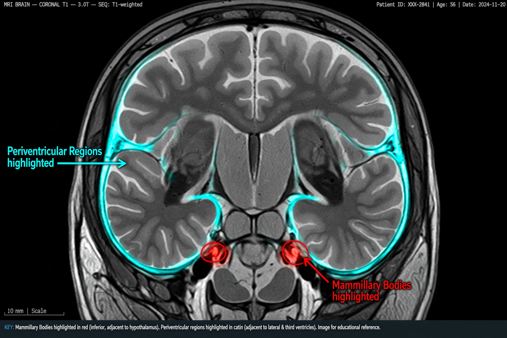

| Wernicke–Korsakoff syndrome | |
|---|---|
| Specialty | Neurology, psychiatry |
| Symptoms | Confusion, ataxia, abnormal eye movements; severe memory loss, confabulation |
| Causes | Thiamine (vitamin B1) deficiency, usually from alcohol use disorder or malnutrition |
| Treatment | Urgent high-dose thiamine replacement, then long-term supplementation and abstinence |
| Named after | Carl Wernicke, Sergei Korsakoff |
Wernicke–Korsakoff syndrome (WKS) is the combined presentation of Wernicke encephalopathy and Korsakoff syndrome, two related disorders caused by thiamine (vitamin B1) deficiency, most often in the setting of chronic alcohol misuse and malnutrition, but also after bariatric surgery, hyperemesis gravidarum, eating disorders or prolonged vomiting. It is a medical emergency when acute, and a cause of permanent amnesia when treatment is delayed.

The acute phase, described by Carl Wernicke in 1881, classically presents with a triad of confusion, ataxia and ophthalmoplegia/nystagmus, though the full triad appears in only a minority of cases, contributing to underdiagnosis. Untreated, it can progress to coma and death, or to the chronic amnesic state.
Named after Russian psychiatrist Sergei Korsakoff, this chronic phase is dominated by profound anterograde amnesia — inability to form new memories — with relatively preserved intelligence and remote memory, apathy, and confabulation, in which patients unconsciously invent plausible details to fill memory gaps. Pathology centres on the mammillary bodies, medial thalamus and periaqueductal regions.
Suspected Wernicke encephalopathy requires immediate parenteral thiamine, given before glucose (which can precipitate or worsen the condition), followed by oral supplementation, nutritional rehabilitation and treatment of the underlying alcohol use disorder with agents such as naltrexone or acamprosate. Eye and gait signs often recover quickly; the amnesia of Korsakoff syndrome improves fully in only about a quarter of patients, many requiring long-term supervised care. Prevention includes thiamine prophylaxis for at-risk patients and, in some countries such as Australia, consideration of thiamine fortification of staple foods.